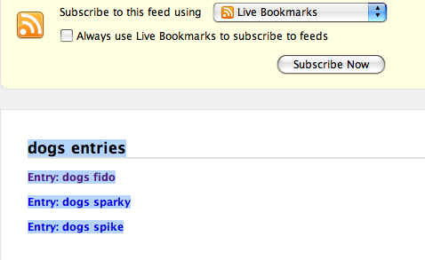
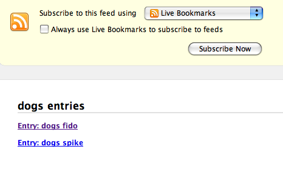
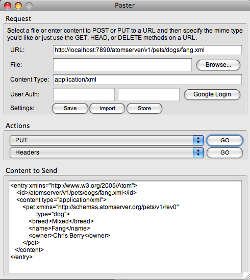
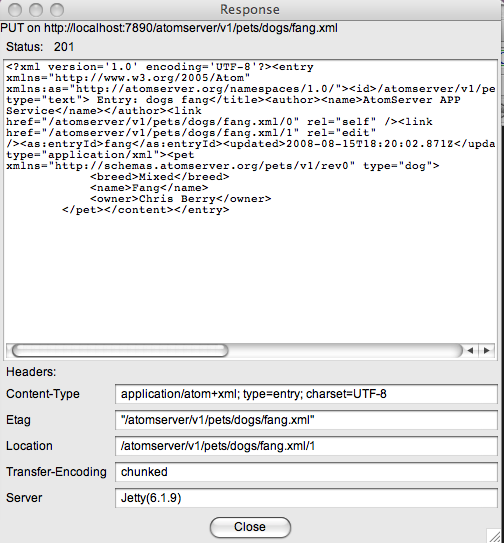
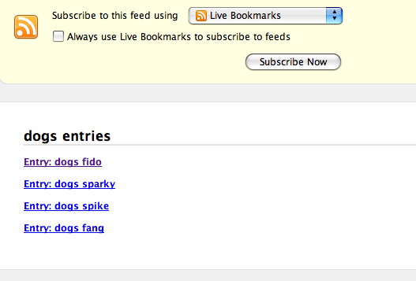

This document describes some specific details about getting started with AtomServer.
For a further, detailed description of the actual protocol, either
- See the Atom Publishing Protocol Reference for further information about the elements of the feed itself. Note that we do not exhaustingly document this information ourselves, because we are using Atom entirely as dictated by the standard.
- See the AtomServer
Protocol
Basics document for general information about communicating with
the atomserver service.
Nor does this document explain the basics of XML, namespaces, syndicated feeds, and the GET, POST, PUT, and DELETE requests in HTTP, as well as HTTP's concept of a "resource." For more information about those things, see the Additional resources section of this document.
Contents
- Installing the Demo AtomServer
- Exploring the Distribution
- Exploring the Configuration
- Some Example Feed Requests
- Testing PUTs and DELETEs
- Building AtomServer
- Configuring Postgresql
- Additional Resources
Installing AtomServer
AtomServer is usable right out of the box. It is simply a Java Web Application packaged into a standard WAR file. But to make things easier for the first time user. AtomServer provides a standalone implementation which runs in a embedded Jetty server, complete with a sample Atom workspace that contains a few Entries. The only prerequisite is, of course, Java. AtomServer will build and run with Java 1.5, but Java 1.6 is highly recommended.The standalone AtomServer implementation requires zero configuration. For this discussion, let's assume that you are installing to a directory identified by $ATOMSERVER_HOME.
So, to get started with AtomServer, you just
1) Download the AtomServer tarball.
$ curl -G
http://repository.codehaus.org/org/atomserver/atomserver/2.0/atomserver-2.0-install.tar.gz
2) Expand it.
$ cd
$ATOMSERVER_HOME
$ tar -zxvf atomserver-2.0-install.tar.gz
$ tar -zxvf atomserver-2.0-install.tar.gz
3) Type a single command;
$ cd
$ATOMSERVER_HOME
$ ./bin/atomserver -seed
$ ./bin/atomserver -seed
And you're up-and-running. It's that easy. By the way, the -seed switch tells AtomServer to seed the HSQLDB database with data to match the few Entries provided in $ATOMSERVER_HOME/data. You only need to use -seed this the first time you run atomserver.sh.
Now you can see your AtomServer in action. Bring up your favorite browser and hit the following URL; http://localhost:7890/atomserver/v1/pets/dogs. This URL asks for a Feed of the dogs Collection from the pets Workspace. Dont' worry, in a later section we'll explore how to setup your AtomServer to deliver your own workspaces.
Because AtomServer is an Atom Data Store, AtomServer requires a relational database to run. AtomServer currently supports; PostgresSQL, SQLServer, and hsql. Installing database software is somewhat out of scope for this document. Once you've installed your database, you will need to setup the required AtomServer database tables. DDLs are provided for each supported database to make this relatively painless.
But the out-of-the-box, standalone AtomServer spins up HSQLDB - an embeddable Java database - and thus, requires no configuration. Unfortunately HSQLDB does not provide realistic database isolation levels, and is not recommended for high load, heavily concurrent applications, although its perfectly acceptable for our standalone demonstration AtomServer.
Exploring the Distribution
Let's explore the distribution you just unpacked. Again, for the sake of discussion, let's assume that you've chosen to install into a directory location identified by the environment variable; $ATOMSERVER_HOME. After a successful deployment, AtomServer will lay out the following directory structure in $ATOMSERVER_HOME. (Directories in green. Files in red)- $ATOMSERVER_HOME/data/
:
The AtomServer data directory. Actually, this directory can be
anywhere, as defined by the environment variable $ATOMSERVER_DATA_DIR.
But, in general, it is located at $ATOMSERVER_HOME/data/.
Note; this
directory may actually be a NFS mount when AtomServer is deployed
across several machines. This is the
location of the actual data associated with AtomServer. In other words;
this is the
location of the XML Atom Content files for Entries. It is only required
when you are doing file-based Content storage - as opposed to DB-based
Content storage. The /data directory which ships with AtomServer
contains a few sample Entries for our demo pets Workspace. These are
loaded into an embedded HDSQLDB database when you type ./bin/atomserver.sh -seed.
- $ATOMSERVER_HOME/data/pets : The data for our file-based Demo AtomServer Workspace named pets.
- $ATOMSERVER_HOME/data/cats : The cats Collection for our file-based Demo AtomServer Workspace; pets.
- $ATOMSERVER_HOME/data/dogs : The dogs Collection for our file-based Demo AtomServer Workspace; pets.
- $ATOMSERVER_HOME/data/dogs/fi/fido/fido.xml :
The <content>
XML for an Entry named fido in our file-based Demo AtomServer
Workspace/Collection; pets/dogs.
Notice that the subdirectories within the Collection are created to
alleviate possible issues with too many files or directories.
AtomServer creates this structure when it stores the XML Content to
disk.
- $ATOMSERVER_HOME/conf/
:
The AtomServer configuration directory. This is the directory where
your external configuration files are kept.Note that this directory
could be anywhere, as defined by the environment variable $ATOMSERVER_CONF_DIR. This is
explained in more detail in the Configuration Dorcument.
- $ATOMSERVER_HOME/conf/lib
: Any JARs in this directory are put onto AtomServer's
ClassPath with a extended ClassLoader
- $ATOMSERVER_HOME/conf/classes : This directory is put onto AtomServer's ClassPath with a extended ClassLoader
- $ATOMSERVER_HOME/conf/classes/pets-1.0.rnc :
This is the RelaxNG schema for our pets Workspace.
This file is used by the RelaxNGValidator that we wire into our Spring
Workspace Bean.
- $ATOMSERVER_HOME/conf/classes/env : AtomServer looks in this directory first for "environment properties" files -- files which tell AtomServer what DB to connect to, etc. These files are quite important and are, in part how you configure AtomServer for your application. You tell AtomServer which of these files to use when you provide the "-env" argument to the control script; atomserver.sh. For example; atomserver.sh -env myenv .... tells AtomServer to read in the properies file; myenv.properties file.
- $ATOMSERVER_HOME/conf/classes/env/myenv.properties
: This is the environment properties file that your
demo AtomServer is actually using. Open that file up, and you will see
that it is configured to use HSQLDB (hsql), the database URL, etc.
- $ATOMSERVER_HOME/conf/classes/org/atomserver/spring/ext
:
AtomServer looks in this directory
first for overrides for AtomServer's Spring Beans. For example,
you could create a workspaceBeans.xml file here which defines the
Workspaces for your application overriding those in AtomServer itself.
- $ATOMSERVER_HOME/conf/classes/org/atomserver/spring/ext/workspaceBeans.xml
: This file contains the Spring Beans that set up the pets
Workspace used by the demo AtomServer. Note that this file could have
any name, because any ".xml"
file in this directory is parsed and all appropriately named Beans will
override those in AtomServer. So, in this case, by using the id; org.atomserver-workspaces
we override that Bean within AtomServer itself.
- $ATOMSERVER_HOME/bin/
: The location of scripts exclusive to AtomServer.
- $ATOMSERVER_HOME/bin/atomserver.sh
: The AtomServer control script. This script controls
the starting of AtomServer. There are several ways to provide
input
to this script; command line options, environment variables, or an
override file ($ATOMSERVER_HOME/atomserver-config.sh).
This control script is relatively full featured.
- $ATOMSERVER_HOME/logs/
:
The directory where all log files are produced. Look here for all
pertinent AtomServer log files.
- $ATOMSERVER_HOME/docs/
:
The AtomServer on-line documentation, including this document.
- $ATOMSERVER_HOME/webapps/ : The WAR file. This file is expanded the first time you run atomserver.sh into $ATOMSERVER_HOME/webapps/atomserver-X.X, where X.X is the version number (e.g. atomserver-2.0)
- $ATOMSERVER_HOME/webapps/atomserver-X.X/
:
The AtomServer webapp (WAR) directory. This directory is created when atomserver.sh unpacks the WAR.
Exploring the Configuration.
First let's look at the Spring configuration for our Demo AtomServer.
As mentioned above, these Beans are
contained in the file; $ATOMSERVER_HOME/conf/classes/org/atomserver/spring/ext/workspaceBeans.xml
We are not going to get into all the details here. There is
another configuration document
that explains it all in gory detail. Here is the definition of our
example pets
Workspace.
<util:set id="org.atomserver-workspaces">
<bean class="org.atomserver.core.WorkspaceOptions">
<property name="name" value="pets"/>
<property name="defaultProducingEntryCategoriesFeedElement" value="true"/>
<property name="defaultProducingTotalResultsFeedElement" value="true"/>
<property name="defaultContentStorage" ref="org.atomserver-contentStorage"/>
<property name="defaultContentValidator">
<bean class="org.atomserver.core.validators.RelaxNGValidator">
<property name="schemaLocation"
value="classpath:pets-1.0.rnc"/>
</bean>
</property>
<property name="defaultCategoriesHandler" ref="org.atomserver-centryCategoriesHandler"/>
<property name="defaultAutoTagger">
<bean class="org.atomserver.core.autotaggers.XPathAutoTagger">
<property name="performanceLog" ref="org.atomserver-cperformanceLog"/>
<property name="entryCategoriesDAO" ref="org.atomserver-centryCategoriesDAO"/>
<property name="script">
<value>
<![CDATA[
NAMESPACE pets = http://schemas.atomserver.org/pets/v1/rev0;
DELETE SCHEME {urn:pets.breeds};
MATCH "//pets:breed" {urn:pets.breeds}$;
]]>
</value>
</property>
</bean>
</property>
</bean>
</util:set>
<bean class="org.atomserver.core.WorkspaceOptions">
<property name="name" value="pets"/>
<property name="defaultProducingEntryCategoriesFeedElement" value="true"/>
<property name="defaultProducingTotalResultsFeedElement" value="true"/>
<property name="defaultContentStorage" ref="org.atomserver-contentStorage"/>
<property name="defaultContentValidator">
<bean class="org.atomserver.core.validators.RelaxNGValidator">
<property name="schemaLocation"
value="classpath:pets-1.0.rnc"/>
</bean>
</property>
<property name="defaultCategoriesHandler" ref="org.atomserver-centryCategoriesHandler"/>
<property name="defaultAutoTagger">
<bean class="org.atomserver.core.autotaggers.XPathAutoTagger">
<property name="performanceLog" ref="org.atomserver-cperformanceLog"/>
<property name="entryCategoriesDAO" ref="org.atomserver-centryCategoriesDAO"/>
<property name="script">
<value>
<![CDATA[
NAMESPACE pets = http://schemas.atomserver.org/pets/v1/rev0;
DELETE SCHEME {urn:pets.breeds};
MATCH "//pets:breed" {urn:pets.breeds}$;
]]>
</value>
</property>
</bean>
</property>
</bean>
</util:set>
Most of the properties in this Bean are wired to the AtomServer defaults settings, but let's take a look at what's here. Although before we get started, you're probably wondering why the all these properties start with the word "default". Well, that's because AtomServer will let you configure things at either the Workspace and/or the Collection level, and the values set at the Workspace level act as the defaults for all of its Collections, unless the Collection itself overrides that property.
- defaultProducingEntryCategoriesFeedElement
:: Indicates whether the Workspace will output <category> elements
within each <entry>
element when a Feed response is produced. Very often this Category
information is of no interest to the Requestor. And since this
information requires a reasonably expensive SQL query to produce, as
well as increased payload, it is omitted by default (i.e. is set to false). Note that Category
information is more often used to fine-point the Feed query itself
(i.e. search by Category)
- defaultProducingTotalResultsFeedElement
:: Indicates whether the <totalElements>
is to be produced for Feed elements. Producing this element requires a
SQL query that is, in essence, as expensive as the SQL query required
to produce the requested Feed. And since this information is very often
of no interest to the Requestor, it is omitted by default (i.e. is set
to false).
- defaultContentStorage ::
Specifies the ContentStorage
to use -- i.e. the method that an Entry's <content> is to be
stored. This storage is either in the file system, or in a database.
The default ContentStorage
is to use the file system. For our Demo AtomServer, we are using
the default, and are storing files in $ATOMSERVER_HOME/data/pets.
- defaultContentValidator ::
The ContentValidator
to use. In this case we are not using the AtomServer default
(none). Instead, we are using the RelaxNGContentValidator,
which has been wired to validate against the RelaxNG schema specified
in pets-1.0.rnc.
- defaultCategoriesHandler :: The
CategoriesHandler to
use. This element is omitted when you don't want your Workspace to
support Categories.
- defaultAutoTagger
:: The AutoTagger to
use. Auto Tagging is when AtomServer automatically creates Categories
for an Entry based on its Content whenever that Entry is updated or
created. As you can see above, you specify rules in for the Autotagger. In the Demo
AtomServer we are using the XpathAutoTagger,
which obviously uses XPath to pick out XML Nodes from the <content>. There are a
few simple macros (e.g. DELETE
and MATCH above) that you
can use to create scripts. In this example, we will first delete
all existing urn:pets.breeds
Categories for an Entry, and then create new ones where the Category's
Term has been set to the value of the XPath expression; //pets:breed. In other words,
if there is, say, an element; <breed>Mixed</breed>
in the <content>
XML, then a Category in Scheme; urn:pets.breeds
with Term; Mixed will be
created and stored for this Entry. You can find much more information
about Auto Tagging here.
Some Example Feed Requests
Assuming that you have followed the simple steps above, you should now have our Demo AtomServer running against the sample pets Workspace. So now let's explore a bit further. Bring up a browser and type in the following URL; http://localhost:7890/atomserver/v1/pets/dogs. You should see something like this in your browser window;
This output is from FireFox. It may look different in your browser of choice. Regardless, the browser should likely have a built-in Atom Feed Reader, such as Live BookMarks shown above, and should display the Atom Feed you requested. Note that a list of links is displays. Each of these is a link to an Atom Entry. Click on one of these links, say, Entry: dogs fido, and you should get the following Atom XML downloaded. Note that this output has been reformatted for readability. The actual output will not have much whitespace in it)
<?xml
version='1.0' encoding='UTF-8'?>
<entry xmlns="http://www.w3.org/2005/Atom">
<id>/atomserver/v1/pets/dogs/fido.xml</id>
<title type="text"> Entry: dogs fido</title>
<author><name>AtomServer APP Service</name></author>
<link href="/atomserver/v1/pets/dogs/fido.xml" rel="self" />
<link href="/atomserver/v1/pets/dogs/fido.xml/1" rel="edit" />
<updated>2008-05-02T21:22:06.122Z</updated>
<published>2008-05-02T21:22:06.122Z</published>
<category scheme="urn:pets.breeds" term="Mixed" />
<content type="application/xml">
<pet xmlns="" type="dog">
<breed>Mixed</breed>
<name>Fido</name>
<owner>Chris Berry</owner>
</pet>
</content>
</entry>
<entry xmlns="http://www.w3.org/2005/Atom">
<id>/atomserver/v1/pets/dogs/fido.xml</id>
<title type="text"> Entry: dogs fido</title>
<author><name>AtomServer APP Service</name></author>
<link href="/atomserver/v1/pets/dogs/fido.xml" rel="self" />
<link href="/atomserver/v1/pets/dogs/fido.xml/1" rel="edit" />
<updated>2008-05-02T21:22:06.122Z</updated>
<published>2008-05-02T21:22:06.122Z</published>
<category scheme="urn:pets.breeds" term="Mixed" />
<content type="application/xml">
<pet xmlns="" type="dog">
<breed>Mixed</breed>
<name>Fido</name>
<owner>Chris Berry</owner>
</pet>
</content>
</entry>
If we examine this Atom Entry, we can see that we do have one Category applied (urn:pets.breed)Mixed, as defined in the AutoTagger setup above. And you can also verify that the <content> returned matches that in the Content storage ($ATOMSERVER_HOME/data/dogs/fi/fido/fido.xml.r0).
Next, let's do a Category query. In your browser, type in the following URL; http://localhost:7890/atomserver/v1/pets/dogs/-/(urn:pets.breeds)Mixed Here we are asking for all Entries in the Workspace; pets and the Collection; dogs, which have the Category; (urn:pets.breed)Mixed defined. And you should get something like this output returned;

Notice that this time we only get two Entries returned. If you look at the corresponding XML in the Content storage you can verify that both fido and spike have <breed>Mixed</breed>, while sparky is <breed>Collie</breed>. Thus, only those two Entries are returned.
Of course, we've only scratched the surface of what AtomServer can do. It has an impressive list of features. But we hope that we've piqued your interest enough for you to get your hands dirty digging under the covers.
Testing PUTs and DELETEs
Again, we use Firefox, so our example will center around that browser. Before we get started, there is an excellent Firefox plugin named Poster that you'll need to install if you wish to follow along. Poster is a highly recommended tool for RESTful service developers. It enables you to easily POST, PUT, or DELETE to a URL. After you've installed Poster, open it. (Poster opens using a tiny little [P] at bottom of your browser. It's easy to miss ;-).Let's PUT a new dog named "Fang" into our example Workspace. Set up Poster as shown below, with
- URL = http://localhost:7890/atomserver/v1/pets/dogs/fang.xml
- Content Type = application/xml
- Actions = PUT
- Content to Send =
<entry xmlns="http://www.w3.org/2005/Atom">
<id>/atomserver/v1/pets/dogs/fang.xml</id>
<content type="application/xml">
<pet xmlns="http://schemas.atomserver.org/pets/v1/rev0" type="dog">
<breed>Mixed</breed>
<name>Fang</name>
<owner>Chris Berry</owner>
</pet>
</content>
</entry>

Now hit GO, and you will get the following response from Poster;

Note that Status = 201 CREATED, and that your Entry was returned with proper edit and self links, updated and published elements, etc.
And if you now go back to the "Dogs Feed" (http://localhost:7890/atomserver/v1/pets/dogs/) , you will see our new dog; Fang.

Building AtomServer
Most people will never need to actually build AtomServer, instead they will simply deploy the AtomServer WAR and configure it to their needs. That said, if you do wish to build it, its easy to do. AtomServer uses Maven for its build, so there are very few prerequisites to building. Maven will download all of AtomServer's dependencies for you, and build everything into standard locations using standard Maven commands. (e.g. mvn clean, mvn install, mvn jetty:run, etc.). If you are not already familiar with Maven, you should probably consider reading some introductory Maven documentation before starting.Prerequisites (in addition to those identified above)
- Maven. You will need to download and install the latest Maven
Building
Building is simple, just type;$ mvn clean
install -Denv=asdev-hsql-mem
This would build using the built-in HSQLDB in-memory database.
If you to specify another environment, like, say, Postgresql, you'll need to supply a different "-env" switch. (Although, the default env is, infact, asdev-postgres.)
$ mvn clean
install -Denv=asdev-postgres
Configuring Postgresql
Let's assume that you've already installed Postgresql on your computer, and that you're ready to install the AtomServer database. Furthermore, let's assume that you have created the conventional Postgresql admin user; "postgres".1) You'll need to create a user on your computer named "atomserver". The scripts below assume this user exists, with the password; "atomserver". Obviously, you can create your own versions of any of these scripts, and use any username/password you'd like.
2) Create the database;
$ su postgres
$ createdb atomserver_dev
$ createdb atomserver_dev
3) Create the database tables, indexes, etc.;
$ su postgres
$ psql atomserver_dev -f $ATOMSERVER_HOME/webapps/atomserver-X.X/WEB-INF/classes/org/atomserver/sql/postgres/postgres_ddl.sql
$ psql atomserver_dev -f $ATOMSERVER_HOME/webapps/atomserver-X.X/WEB-INF/classes/org/atomserver/sql/postgres/postgres_ddl.sql
4) Create the "atomserver" user in Postgresql;
$ su postgres
$ psql atomserver_dev
# CREATE USER atomserver WITH PASSWORD 'atomserver';
# \q
$ psql atomserver_dev
# CREATE USER atomserver WITH PASSWORD 'atomserver';
# \q
5) Grant permissions in atomserver_dev to atomserver;
$ su postgres
$ psql atomserver_dev -f $ATOMSERVER_HOME/webapps/atomserver-X.X/WEB-INF/classes/org/atomserver/sql/postgres/grant_perms.sql
$ psql atomserver_dev -f $ATOMSERVER_HOME/webapps/atomserver-X.X/WEB-INF/classes/org/atomserver/sql/postgres/grant_perms.sql
6) (Optional) Edit pg_hba.conf. Depending on how you've set up your Postgresql security, you may need to add permissions to atomserver in this file.
7) Restart Postgresql;
$ su postgres
$ pg_ctl restart
$ pg_ctl restart
Additional resources
You may find the following third-party documents useful:* Overview of Atom from IBM
* HTTP 1.1 method definitions; specification for GET, POST, PUT, and DELETE
* HTTP 1.1 status code definitions
* Atom Syndication Reference (from Atom-enabled)
* Getting to know the Atom Publishing Protocol (from IBM)